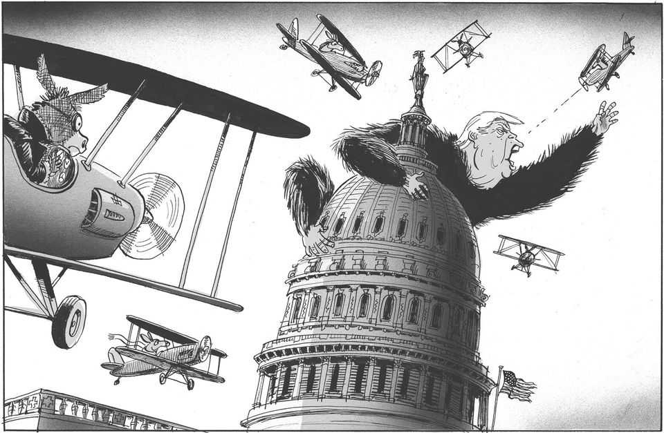

The world this week
Cartoon: The results of the midterms
A lighter take on the news

Nov 5th 2026
Dig deeper into the subject of this week’s cartoon:
Donald Trump’s humiliation offers America an opportunityThe Democrats have won the biggest congressional landslide in 50 yearsA landslide for Democrats. A rebuke to Donald Trump
You can see previous ones here.